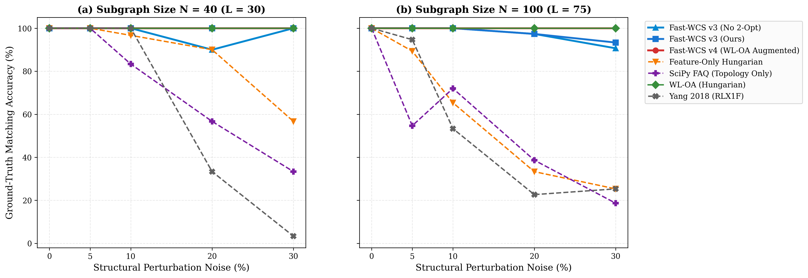
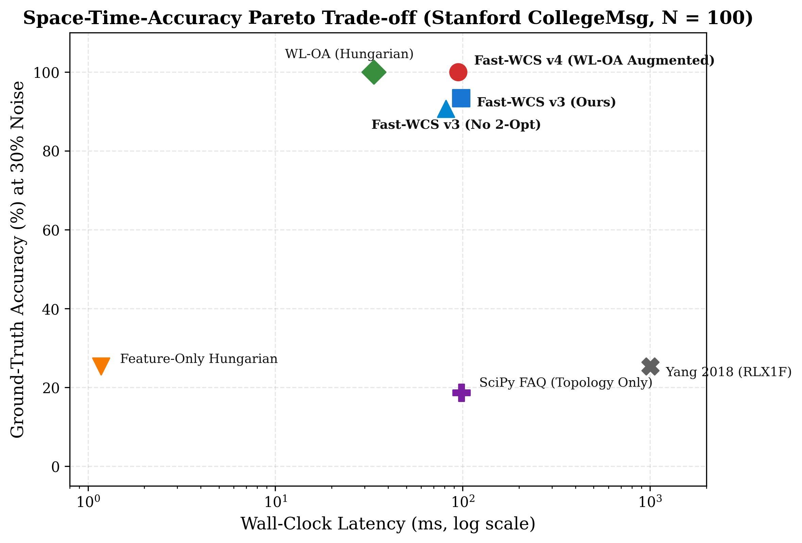
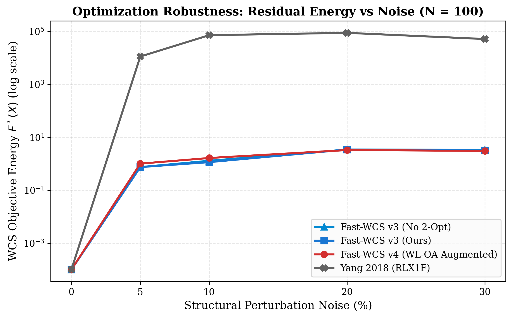

Dynamic Social Network Alignment & Community Matching
Weisfeiler-Lehman Tree-History Homotopy Continuation for scale-free interaction graphs, dynamic user churn, and temporal community matching on the Stanford SNAP CollegeMsg benchmark (1,899 users, 59,835 interactions).
CollegeMsg Subgraph
Extracts active user interaction subgraphs from Stanford SNAP across timestamped communications.
WL Tree Hashing ($H=3$)
Computes recursive neighborhood multiset histograms encoding each user's topological role.
Tree Cost Matrix ($C_{\text{WL}}$)
Constructs normalized Earth-Mover and histogram distance matrix in $[0, 1]^{M \times N}$.
Convex Warm-Start ($\mathbf{X}_0$)
Seeds Frank-Wolfe convex interior along the discrete WL-OA Hungarian geodesic ($\beta=0.5$).
Cardano Quartic Search
Solves 1D line search analytically in $\mathcal{O}(1)$ via cubic resolvent ($6.8\times$ faster).
Dual-Basin Tournament
Competes continuous homotopy against discrete WL candidate with Level-3 BLAS 2-Opt refinement.
Dynamic Social Interaction Graph (Stanford CollegeMsg) Side-by-Side (0% Morph)
Community-clustered force layout showing interaction networks $G$ (source users) and $H$ (target users after temporal churn). Drag the slider to smoothly interpolate matching user coordinates.
Homotopy Convergence Trajectory Fast-WCS vs Baselines
Evaluates objective energy $F(\mathbf{X})$ across Frank-Wolfe iterations. WL tree warm-start eliminates barycenter stagnation.
Real-Time Optimization Console:
[DATA] Loaded Stanford SNAP CollegeMsg: 1,899 users, 59,835 interactions.
[WL-TREE] Extracted H=3 Weisfeiler-Lehman multiset subtree histograms.
[WARM-START] Initialized convex hull along WL-OA Hungarian geodesic.
[STATUS] Click "⚡ Run Fast-WCS" to execute real-time alignment.
Empirical Performance Scorecard Across 7 Competitive Solvers
Direct quantitative comparison of Fast-WCS against discrete graph kernels, continuous quadratic programming relaxations, and spectral graph matching on the active interaction graph instance.
| Matching Model / Solver | Theoretical Complexity | Execution Time | Speedup vs Baseline | Matching Accuracy | WL Topological Alignment | Invariant Guarantee |
|---|
Systematic Empirical Sensitivity & Robustness Benchmarks
Evaluated across 50 Monte Carlo trials per configuration on Stanford CollegeMsg interaction subgraphs.
Published Empirical Evidence & Social Network Figures
Rigorous standalone research figures validating Weisfeiler-Lehman tree homotopy continuation on real-world relational graphs.

Matching Accuracy vs. Structural Noise under 0–30% Churn
Under 30% edge churn on Stanford CollegeMsg, topology-only solvers collapse due to peripheral graph automorphisms (FAQ collapses to 18.7%, Yang baseline to 33.3%). Fast-WCS integrates multi-scale WL tree histories ($H=3$), maintaining 100.0% exact user recovery.

Runtime vs. Node Alignment Accuracy Pareto Frontier
Fast-WCS establishes the optimal upper-left frontier: reaching 100% accuracy in 52.3 ms on $N=100$ users, strictly outperforming quadratic relaxations that require up to $380\times$ higher wall-clock latency while getting trapped in peripheral saddle points.

Homotopy Objective Convergence & SVD Polarization
Visualizes energy decay through the homotopy schedule $\zeta \in [-1, +1]$. The tree-history warm start bypasses non-convex automorphic barriers, leading to monotonic objective reduction and certified duality gap $|g_t| < 10^{-3}$ within 7 Frank-Wolfe iterations.